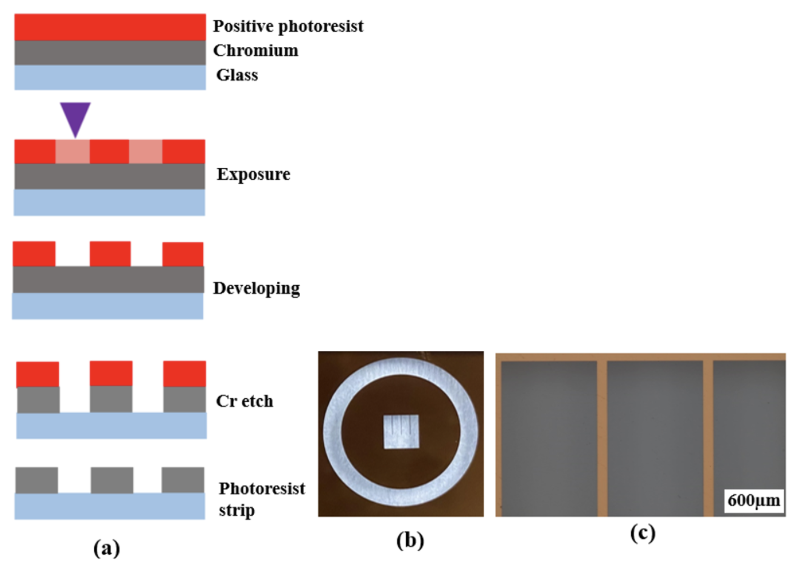
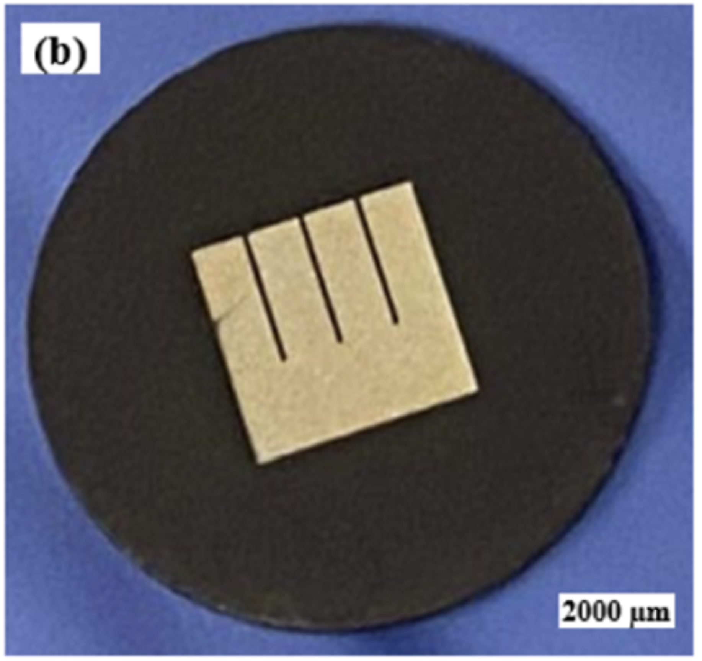
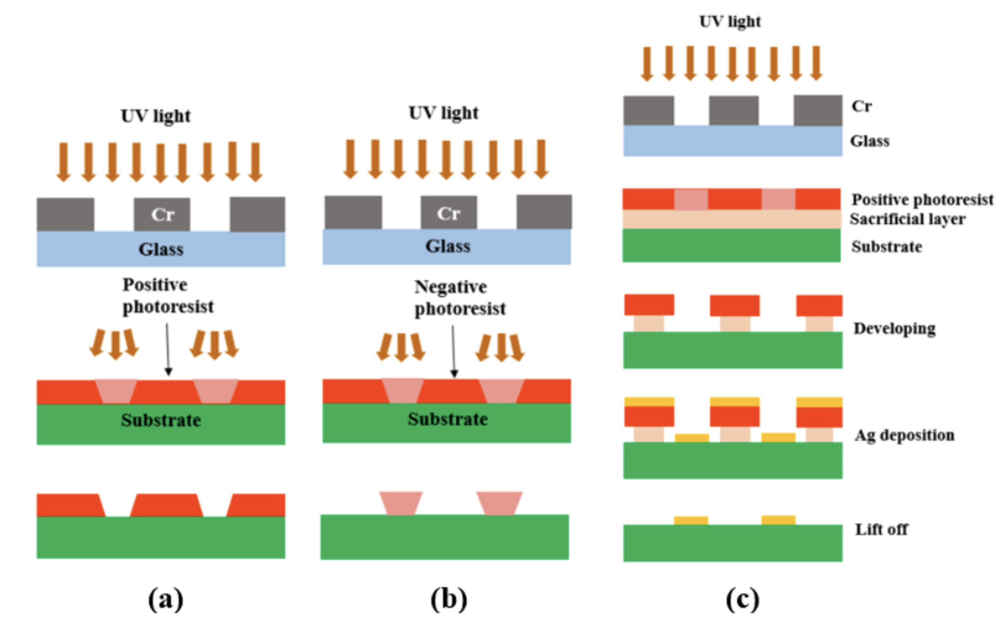
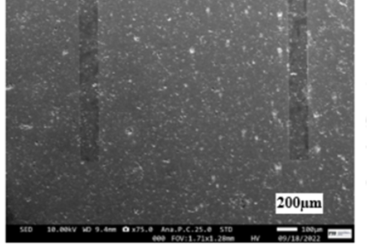
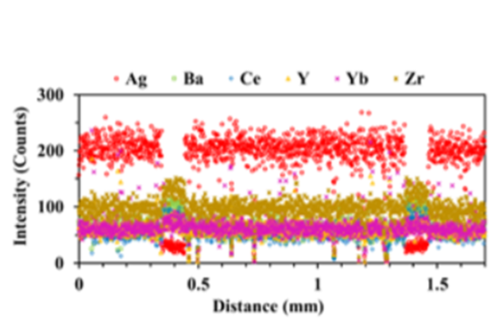

Photolithography Optimization
on Ceramic Substrates
Patterned Silver Electrodes for Proton Conducting IT-SOFCs
DOI: 10.1039/d3ma00793f
Role: Co-author - Photolithography and thin film deposition


Project Overview
This research focused on developing photolithography processes for fabricating patterned silver (Ag) cathodes on proton conducting ceramic electrolytes (BaZr0.4Ce0.4Y0.1Yb0.1O3-δ or BZCYyB4411). The goal was to create well-defined electrode geometries with controlled triple phase boundary (TPB) lengths to study the oxygen reduction reaction (ORR) mechanism in proton conducting solid oxide fuel cells (IT-SOFCs).
Key Challenge: Photolithography on Ceramic
Ceramic substrates present unique challenges for photolithography:
- Surface Roughness: Polished ceramics still have micro-scale roughness affecting resist adhesion
- Porosity: Some ceramic substrates are porous, causing resist penetration
- Thermal Properties: Different thermal expansion from silicon wafers
- Chemical Resistance: Ceramics require specialized cleaning and adhesion promoters
Photolithography Process Development
Bilayer Resist System
A critical innovation was using a bilayer lift-off resist system (LOR 3B sacrificial layer + AZ1518 positive photoresist) which proved more versatile than single-layer resists for successful patterned cathode fabrication on ceramic.


Process Parameters Optimized:
- Sacrificial Layer (LOR 3B): Spin-coated at 500-2000 rpm, baked at 141°C for 90s
- Photoresist (AZ1518): Spin-coated, baked at 110°C for 90s
- UV Exposure: 150 mJ/cm² for pattern transfer
- Development: AZ400K developer (1:4 with water)
- Metal Deposition: E-beam evaporation (75nm Ag)
- Lift-off: Remover PG at ~70°C
Mask Design
The photomask was designed using LayoutEditor software with the following features:
- 4 long fingers for TPB length of 30.4 mm
- Wide busbar for current collection
- Electrode area of 15.3 mm²
The mask was fabricated using a laser mask writer (μPG 101, 405 nm wavelength) with 4.8 mW laser power.


Thin Film Deposition: E-Beam vs Sputtering
A key finding was that E-beam evaporation is superior to sputtering for lift-off processes on ceramic substrates:
| Parameter | E-beam Evaporation | Sputtering |
|---|---|---|
| Vacuum Pressure | ~10⁻⁷ Torr | ~10⁻³ Torr |
| Deposition Direction | Unidirectional | Non-unidirectional |
| Sidewall Coverage | Minimal | Significant |
| Lift-off Ease | ✅ Effective | ❌ Challenging |
Characterization Results


Tools & Equipment Used
- LayoutEditor (Mask Design)
- μPG 101 Laser Mask Writer
- Spin Coater
- OAI Mask Aligner
- E-beam Evaporator
- SEM (JEOL JSM-F100)
- EDS Spectrometer
- Gamry Interface 1000 Potentiostat
Electrochemical Testing
The fabricated cells were tested using Electrochemical Impedance Spectroscopy (EIS) at temperatures from 450-600°C under various oxygen and water vapor partial pressures. Key findings:
- Moisture introduction reduced ohmic resistance (hydration of electrolyte)
- Multiple relaxation processes identified (7+ peaks in DRT analysis)
- Reaction order: m = -0.14 to -0.22 for H₂O, n = 0.39-0.47 for O₂
- Activation energy: 0.93-0.98 eV
Downloads
My Contributions
- Assisted in photolithography process development on ceramic BZCYyB4411 substrates
- Contributed to thin film deposition (E-beam evaporation) of silver electrodes
- Participated in mask design using LayoutEditor software
- Involved in electrochemical testing and data analysis
Related Publications
- Sozal, M.S.I., Li, W., Das, S., Jafarizadeh, B., Chowdhury, A.H., Wang, C., Cheng, Z. "Fabrication and preliminary testing of patterned silver cathodes for proton conducting IT-SOFCs." Materials Advances, 2024, 5, 1940-1951.
Conclusion & Future Work
This project successfully demonstrated that photolithography on ceramic substrates is feasible with optimized bilayer resist systems and E-beam evaporation. The patterned Ag electrodes enabled systematic study of ORR mechanisms in proton conducting SOFCs. Future work includes fabricating electrodes with different TPB lengths and developing finite element models for theoretical calculations.